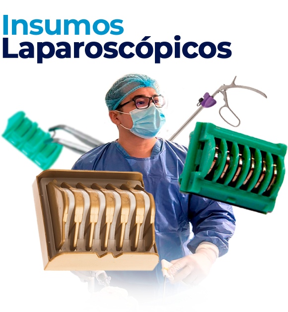

El Salvador
WhatsApp
Llamar
ritechmed12@gmail.com
Inicio
Insumos Médicos
Clips quirúrgicos
Terapia al Vacío
¿Quiénes somos?
Clips quirúrgicos

Insumos laparoscópicos
Conoce y adquiere nuestra variedad de insumos laparoscópicos.
Clips de Titanio
Clips de Polímero Hem-o-lock
Solicitar información